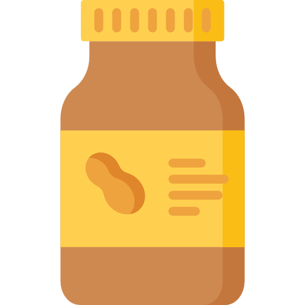

Banana and Peanut Butter Smoothie
- Ingredients:
- 1 'Nana 
- 2 Tablespoons o' Smooth Peanut Butter
- 2 Tablespoons o' Vanilla yogurt
- 1/2 A Glass o' Cow Juice (Or substitute o' choice!)


A fruit from above, a 'gume from the earth.
They make a fine drink when they're mixed-up with mirth.
If you take your first sip in the morning light,
You'll remember the taste when your dreams take flight.

- 1. Spoon up your peanut butter and your vanilla yogurt and jettison them into your blender.
- 2. Break up your 'nana into chunks.
- 3. Slam dunk your chunked up 'nana pieces into the aforementioned blender.
- 4. Pour your cow juice (or substitute o' choice) into...guess where!
- 5. Unless you want to spend the next eternity cleaning your kitchen, put the lid on your blender!
- 6. Smash (gently) that blend button.
Now you've seen that cooking's groovy,

You can go back home. Just click this smoovy!